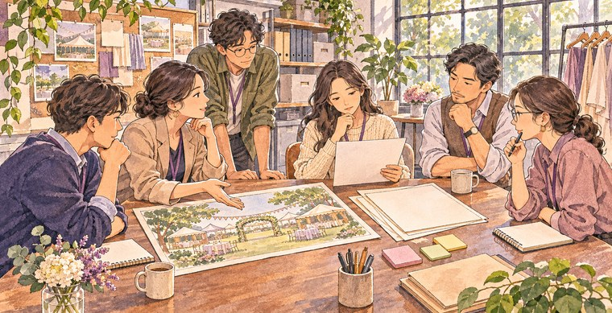

PPL-29 · 香港 · 15–20分鐘 · 行動後檢討 · 團隊反思 · 可應用於其他情境的經驗
項目結束後，團隊學到甚麼？

即使結果理想，也值得找出原因
有關團隊事後回顧的研究探討團隊如何透過共同反思已完成的工作，從中學習。實務指引建議比較原定做法與實際行動，審視各種解釋，並把所得經驗化為跟進工作。這些指引並不能證明會議開得越久就一定越好。下文的活動、限制及證據均屬虛構。
課堂決定
香港一間公司的六人活動團隊如期完成了一場內部工作坊。所有原定環節均有舉行，出入安排運作順利，也沒有接獲安全事故報告。兩星期後的下一場工作坊將改用另一個場地。團隊明天有一次90分鐘的有薪會議，全員均可出席；預算不包括超時工作或額外會議。
A 用15分鐘作簡短的運作回顧，另用75分鐘籌備下一場活動。回顧會記下顯而易見的改善事項、值得保留的做法，以及各項跟進工作的負責人。B 用45分鐘進行較深入、不以懲處為目的的行動後檢討，另用45分鐘籌備。不論採用哪個方案，均由一名受過訓練的組員引導討論，現有筆記和流程表亦可供參考。兩個方案都至少預留45分鐘，處理出入、安全及預訂方面的必要決定。B 減去的是30分鐘可酌情用於完善活動流程的時間，而非必要檢查。
經理希望從經驗中學習，而不是在活動成功後反過來追究誰有過失。A 保留較多時間籌備下一場活動；如果今次確實按原定程序進行，這個方案可能已足夠。B 有較多時間對照原定計劃、實際做法、不同解釋和下個場地的條件，但也無法查究每個細節。目前仍未確定活動為何能準時完成。員工的工作表現評級和薪酬不屬於此次檢討範圍。
一次90分鐘的有薪會議。A：15分鐘運作回顧＋75分鐘籌備。B：45分鐘行動後檢討＋45分鐘籌備。兩個方案均至少預留45分鐘作必要籌備。B 放棄30分鐘可酌情用於完善活動流程的時間。已完成的活動達到了可直接觀察的執行目標。
你的決定明天的會議，你會選 A 還是 B？活動看來辦得成功，在甚麼情況下，深入反思值得佔用籌備時間？
第二輪 · 多了一項資料
流程表原定器材於08:15送抵主會場，並於08:45前完成佈置，以便09:00開場。交接紀錄顯示，預訂確認訊息被送到錯誤的內部處理隊列，器材到08:35才送抵。員工臨時變通，獲場地方許可後，使用相鄰的準備室同步組裝物資。器材在08:55已準備妥當，活動仍準時開場。過程中沒有採用不安全的出入方式，也沒有安排無薪工作。
一名同事認為關鍵在於準備室，另一名歸功於溝通迅速，第三名則指出首個環節所需的物資比預期少。紀錄能確認時間和做法，卻不能確定各因素對結果有多大影響。團隊無法觀察如果沒有臨時變通，結果會是怎樣。不過，下個場地沒有相鄰的準備室，所有組裝工作均須在主會場進行。因此，原樣照搬這個做法，在下個場地並不是可行的後備方案。
團隊有三個議題可選：送貨延誤與預訂確認的交接、同步準備如何追回時間，以及沒有任何延誤或投訴紀錄的裝飾用色改動。團隊可在 B 的45分鐘內，把頭兩項連起來檢討；第三項則可先記錄，有需要時再處理。原有的45分鐘必要籌備時段可用來指定負責人，把針對下個場地的佈置檢查排入已有預算的籌備工作。沒有額外會議配額，也沒有證據顯示下一場活動會失敗。
你的決定你會維持還是更改會議時間的分配？選出值得深入檢討的議題，分清證據與不同解釋，並提出一項可應用於下個場地、不假定仍能採用同一臨時做法的行動。
第一輪決定：按學習價值決定檢討深度
如果簡短檢討已能掌握有用經驗，而籌備下一場活動的價值更高，選 A 是合理的。如果成功掩蓋了協調過程中的疑問，或有些條件很可能改變，B 就值得考慮。不要把反思變成冗長的投訴會，也不要把準時完成當作原定計劃奏效的證明。決定的關鍵，是衡量聚焦檢討的價值，是否值得放棄30分鐘可酌情用於完善活動流程的時間。
第二輪決定：選 B，收窄檢討範圍
我會選 B，集中檢討從預訂確認到送貨的交接，以及其後如何追回時間。兩者環環相扣，影響重大，也與下個場地有關。除非有新證據顯示裝飾值得關注，否則先擱置。把08:15的原定送抵時間、08:35的交接紀錄和08:55準備妥當的紀錄放在一起比較。請各個崗位的人說明當時掌握了甚麼資料，而不是指出應由誰負責。把未能確定的地方記下，不必勉強大家認定只有一個原因。
反事實是一個問題，不是既定事實
問問團隊：如果沒有相鄰的準備室、器材更遲送到，或物資需求跟原先預計的一樣，結果會有甚麼不同？這些假設情境可以揭示原有假設，卻不能量度會損失多少時間，也不能證明是哪位同事挽救了活動。可以確定的是，這個後備做法不能原封不動地用於下個場地。值得進一步驗證的是，能否可靠地取得確認、及時上報問題，並按可行次序完成佈置。應按下個場地的實際條件查證，而不是把這次臨時做法定為標準。
把反思化為可驗證的行動
指定一名預訂負責人，在下個場地議定的截止時間前，向正確的處理隊列取得明確回覆，並記錄對方已收到送貨指示。利用必要籌備時段按下個場地實際的組裝規定，安排一次佈置檢查，納入已有預算的籌備工作。保留團隊迅速溝通的做法，但要訂明交接未獲確認時由誰上報，以及何時上報。下次活動時，比較原定與實際的送抵及就緒時間，並檢視上報安排是否奏效；不要承諾檢討必能保證成功。
教師說明
要清楚交代機會成本：B 留給籌備的時間，剛好是必要的45分鐘。重點是在工作完成後有選擇地共同反思，而不是在決定前蒐集資料，或盲目照搬創辦人的慣常做法。建議檢討議程：5分鐘回顧預期結果，10分鐘整理有紀錄可據的時間線，15分鐘比較各種解釋及經驗可應用於其他場地的條件，10分鐘訂明行動及負責人，5分鐘列出未確定事項及查證方法。這45分鐘是個案的虛構設定，並非經研究驗證的最合適時長。學習筆記不作人事評核之用。
第二輪
流程表原定器材於08:15送抵主會場，並於08:45前完成佈置，以便09:00開場。交接紀錄顯示，預訂確認訊息被送到錯誤的內部處理隊列，器材到08:35才送抵。員工臨時變通，獲場地方許可後，使用相鄰的準備室同步組裝物資。器材在08:55已準備妥當，活動仍準時開場。過程中沒有採用不安全的出入方式，也沒有安排無薪工作。
一名同事認為關鍵在於準備室，另一名歸功於溝通迅速，第三名則指出首個環節所需的物資比預期少。紀錄能確認時間和做法，卻不能確定各因素對結果有多大影響。團隊無法觀察如果沒有臨時變通，結果會是怎樣。不過，下個場地沒有相鄰的準備室，所有組裝工作均須在主會場進行。因此，原樣照搬這個做法，在下個場地並不是可行的後備方案。
團隊有三個議題可選：送貨延誤與預訂確認的交接、同步準備如何追回時間，以及沒有任何延誤或投訴紀錄的裝飾用色改動。團隊可在 B 的45分鐘內，把頭兩項連起來檢討；第三項則可先記錄，有需要時再處理。原有的45分鐘必要籌備時段可用來指定負責人，把針對下個場地的佈置檢查排入已有預算的籌備工作。沒有額外會議配額，也沒有證據顯示下一場活動會失敗。
你的決定你會維持還是更改會議時間的分配？選出值得深入檢討的議題，分清證據與不同解釋，並提出一項可應用於下個場地、不假定仍能採用同一臨時做法的行動。